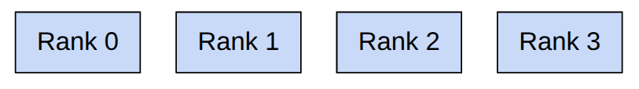
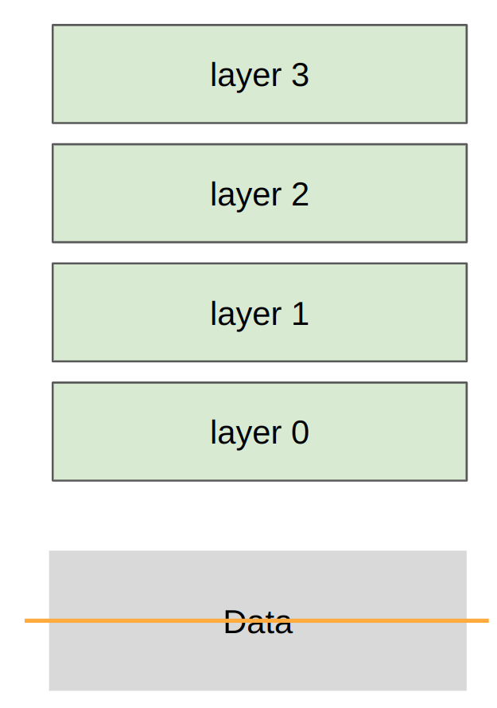
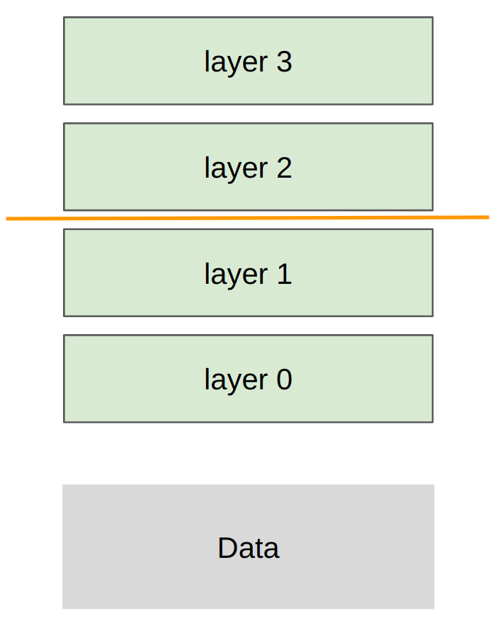

Lecture 7: parallelism
Last week: parallelism within a single GPU
This week: parallelism across multiple GPUs

In both cases, compute (arithmetic logic units) is far from inputs/outputs (data).
Unifying theme: orchestrate computation to avoid data transfer bottlenecks
Generalized hierarchy:
- Single node, single GPU: L1 cache / shared memory (fastest)
- Single node, single GPU: HBM
- Single node, multi-GPU: NVLink/NVSwitch
- Multi-node, multi-GPU: Infiniband/Ethernet (slowest)
Last week: reduce memory accesses via fusion/tiling
This week: reduce communication across GPUs/nodes via replication/sharding
Why do multi-GPU?
- Your parameters (optimizer state + gradients + activations) don't fit on a single GPU.
- You want to use more GPUs (more FLOPs) to train faster.
Part 1: building blocks of distributed communication/computation
Collective operations are the conceptual primitives used for distributed programming
[article]- These are classic in the parallel programming literature from the 1980s.
- Collective means that you specify a general communication pattern across many devices.
- This can be better/faster than managing point-to-point communication yourself.
Setup:

- Rank: a particular device/GPU (e.g., 0, 1, 2, 3)
- World size: total number of devices (e.g., 4)
Operations:
- Broadcast, scatter, gather, reduce (foundations)
- All-gather, reduce-scatter, all-reduce (workhorse)
- All-to-all (for MoEs)
Broadcast: copy from rank 0 to all ranks
Minor use case: rank 0 loads initial checkpoint and broadcasts to all ranks
Scatter tensor on rank 0 to all ranks
Note: stepping stone to understanding reduce-scatter
Gather pieces from all ranks to rank 0 (opposite of scatter)
Note: stepping stone to understanding all-gather
Reduce pieces from all ranks to rank 0, applying some operation (e.g., sum, min, max)
Note: stepping stone to understanding all-reduce
All-gather: perform gather to all ranks, not just rank 0
Use case: each rank holds parameter shard, gather to get full parameters for forward pass
Reduce-scatter: perform reduce on each dimension, scatter results
Use case: after backward pass, sum gradients from different data shards, but distribute storage
All-reduce = reduce-scatter + all-gather
Use case: after backward pass, sum gradients from different data shards, but replicate full parameters
Breaking all-reduce into reduce-scatter + all-gather allows for flexibility (e.g., ZeRO/FSDP)
All-to-all: each rank sends each other rank some tensor (most general)
Notes:
- Useful for MoEs: each rank has split of data and subset of experts; need to route data to experts
- For balanced splits, all-to-all looks like transpose
- Also handles unbalanced splits (but want splits to be as balanced as possible)
Way to remember the terminology:
- Reduce: performs some associative/commutative operation (sum, min, max)
- Scatter is inverse of gather
- All: means destination is all devices
Classic (in the home):
- GPUs on same node communicate via a PCI(e) bus (v7.0, 16 lanes => 242 GB/s)
- GPUs on different nodes communicate via Ethernet (~200 MB/s)
Modern (in the data center):
Typical setup:
- 8 GPUs per node, connected by NVLink to an NVSwitch (B200s' NVLink 5.0 gets 1.8 TB/s; HBM was 8 TB/s)
- 256 nodes per pod, connected by Infiniband (via PCIe -> HCA / Infiniband NIC -> Infiniband cable) (~0.05 TB/s)
- N pods per cluster / datacenter, connected by Ethernet (via PCIe -> CPU)
Bypassing the CPU:
- Ethernet requires passing through the CPU (copying data to kernel socket buffer, build TCP packets, copy to NIC ring buffer)
- Remote Direct Memory Access (RDMA): allows one GPU to directly read/write another GPU's memory without involving the CPU
- Infiniband supports RDMA, but standard Ethernet does not
Advancements:
- GB200/GB300 NVL72: 8 GPUs per tray, 9 trays per rack -> 72 GPUs in one NVLink domain
- RDMA over Converged Ethernet (RoCE): Ethernet bypasses CPU, similar but cheaper/weaker than Infiniband, used by Meta
NVIDIA Collective Communication Library (NCCL)
NCCL translates collective operations into low-level packets that are sent between GPUs.
[talk]- Detects topology of hardware (e.g., number of nodes, switches, NVLink/PCIe)
- Optimizes the path between GPUs
- Launches GPU kernels to send/receive data
PyTorch distributed library (torch.distributed)
- Provides clean interface for collective operations (e.g.,
all_gather_into_tensor)
- Supports multiple backends for different hardware: gloo (CPU), nccl (GPU)
- Also supports higher-level algorithms (e.g.,
FullyShardedDataParallel) [not used in this course]
Let's walk through some examples.
Indeed, all-reduce = reduce-scatter + all-gather!
How fast does communication happen?
References:
[How to reason about collective operations] [Sample benchmarking code]Part 2: distributed training
Walk through bare-bones implementations of each strategy on deep MLPs.
Recall that MLPs are the compute bottleneck in Transformers, so this is representative.

Sharding strategy: each rank gets a slice of the data
Notes:
- Losses are different across ranks (computed on local data)
- Gradients are all-reduced to be the same across ranks
- Therefore, parameters remain the same across ranks
Next time: FSDP/ZeRO: use all-gather and reduce-scatter to avoid holding all parameters in memory

Sharding strategy: each rank gets part of each layer, transfer all data/activations

Sharding strategy: each rank gets subset of layers, transfer all data/activations
Not handled: overlapping communication/computation to eliminate pipeline bubbles
What's missing?
- Communication/computation overlap
- More general models (with attention, etc.)
- Other forms of parallelism (e.g., sequence parallelism, expert parallelism, combinations)
- Jax/TPUs: just define the model, the sharding strategy, and the Jax compiler handles the rest
- But we're doing PyTorch so you can see how one builds up from the primitives
Summary
- Many ways to parallelize: data (batch), tensor/expert (width), pipeline (depth), sequence (length)
- Data parallelism: DDP (all-reduce), FSDP/ZeRO (all-gather + reduce-scatter)
- Tensor parallelism: requires very fast interconnects (e.g., NVLink)
- Pipeline parallelism: can work with slow interconnects, but need to work to reduce pipeline bubbles
- Can re-compute or store in memory or store in another GPUs memory and communicate
- Hardware is getting faster, but will always want bigger models, so will have this hierarchical structure